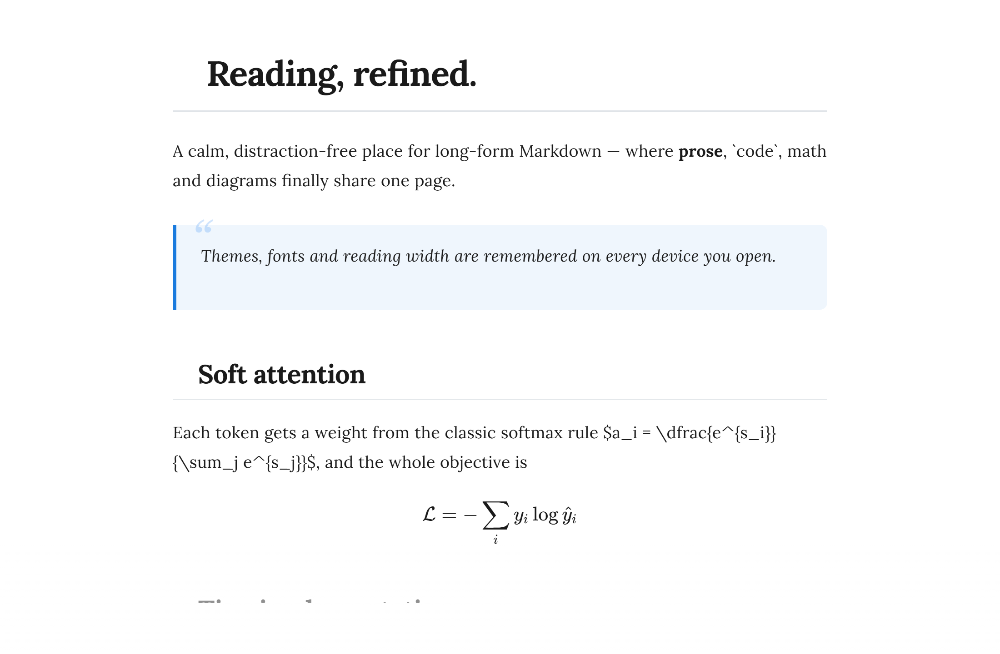
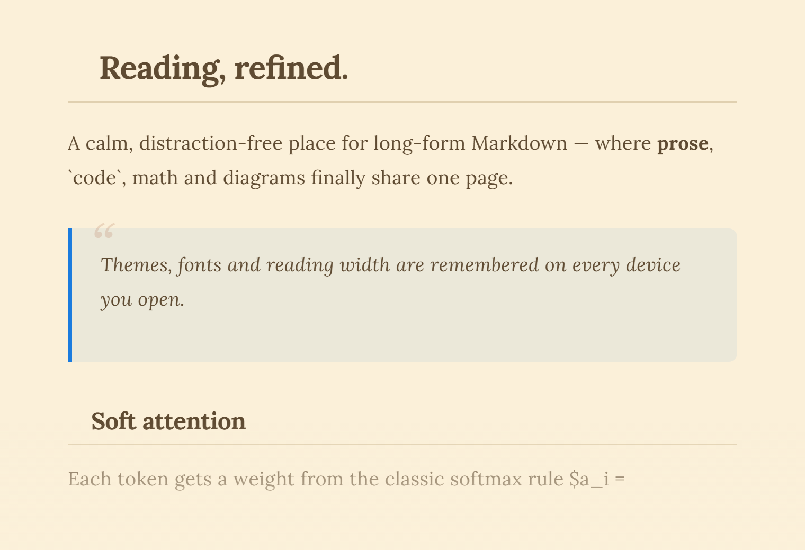
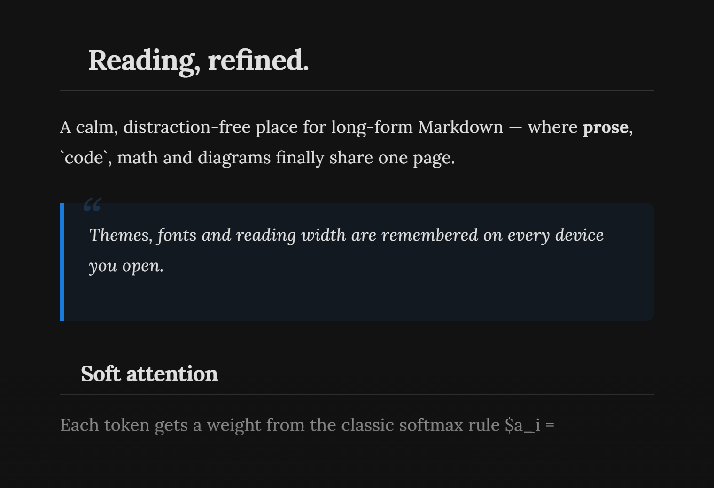
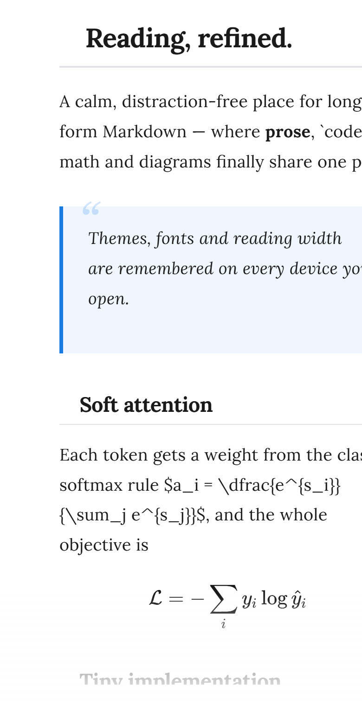

Read Markdown like a well-set book.
A distraction-free reader for your .md files — math, diagrams, code and GitHub import, all rendered beautifully.

Everything a Markdown file deserves.
One page for prose, code, math and diagrams — rendered exactly as the author intended, never as raw text.
Code that reads like code
Language-aware highlighting, a one-tap copy button and a language badge on every block.
def read(path):
with open(path, "r", encoding="utf-8") as f:
return f.read()
Math, properly typeset
KaTeX renders inline and display LaTeX up to specification.
Diagrams from text
A few lines become flowcharts, sequences and Gantt charts.
Pull straight from GitHub
Paste a public repository URL and browse its tree to open any Markdown file — relative links and images resolved for you.
Contents that follow
An auto-generated table of contents with scroll-spy keeps your place in long docs.
Search the whole document
A sticky search bar highlights every match and jumps between them in a keystroke.
Three ways to read.
Paperwhite for daylight, Sepia for long sessions, Dark for the night. Your choice is remembered.


Made for the screen in your hand.
Distinct layouts for laptop, tablet and phone — not a squeezed desktop.

Repository
Recent files
Bring your own Markdown.
Open a file any way you like. Everything is read in your browser — nothing is ever uploaded.
- Drag & dropDrop a .md file anywhere on the page.
- UploadPick a .md, .markdown or .txt file from the sidebar.
- GitHub URLImport every Markdown file from a public repository.
- Recent filesPick up exactly where you left off.
Tune it to your eyes.
Eight reading fonts, adjustable size, width and line spacing — with a handful of keyboard shortcuts.
The quick brown fox jumps over the lazy dog — and then reads it back, slowly, without a single distraction.
Font: Lora · 18px · Medium width · Relaxed spacingOpen MD Studio and drop a file.
Free, open source and entirely in your browser — no accounts, no uploads.
Open MD Studio